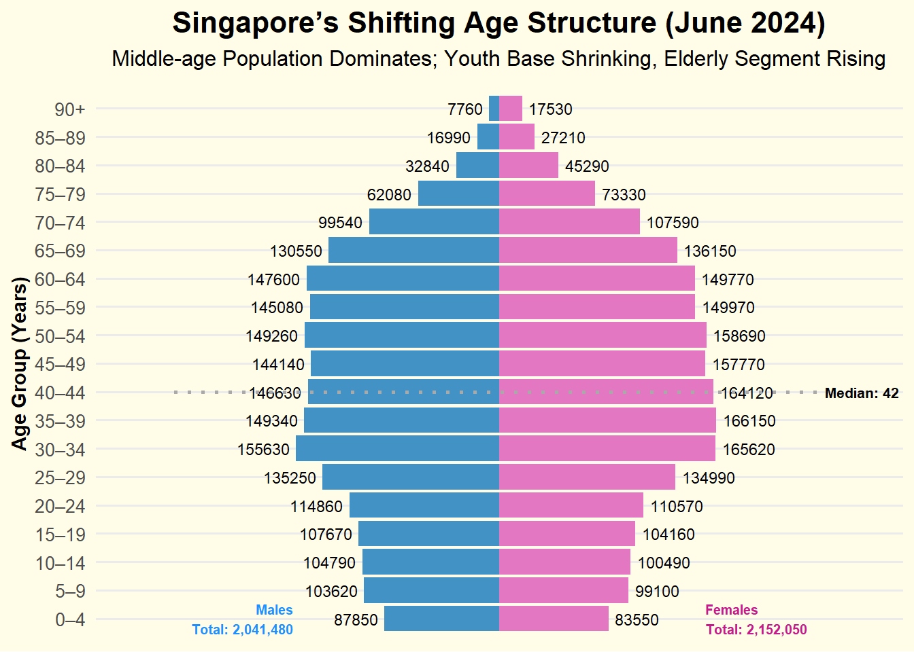
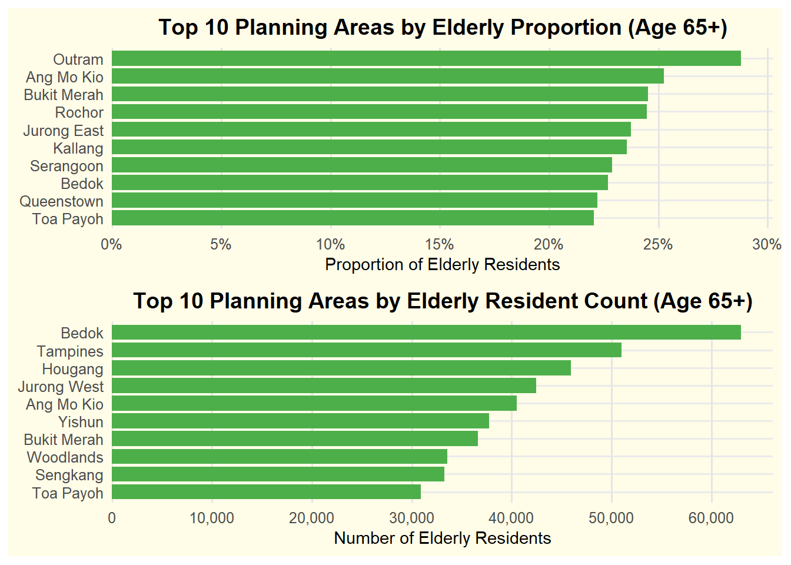
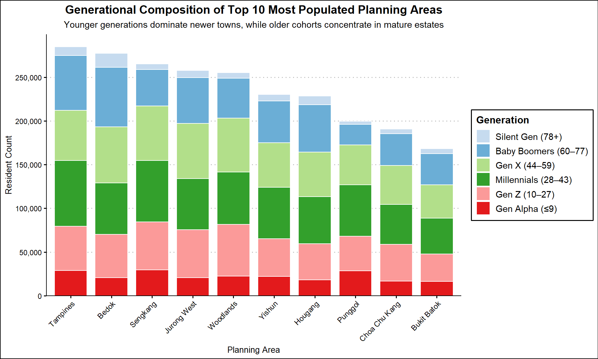

pacman::p_load(tidyverse, ggrepel, patchwork, ggthemes, scales,
ggpubr) Take-Home Exercise 1
Take-home Exercise 1
1 Overview
Creating enlightening and truthful data visualizations involves focusing on accuracy, transparency, and the ability to effectively communicate insights. It’s about presenting data in a way that is both informative and aesthetically pleasing, ensuring the audience can grasp the information quickly and accurately.
1.1 Setting the scene
A local online media company that publishes daily content on digital platforms is planning to release an article on demographic structures and distribution of Singapore in 2024.
1.2 The Task
Assuming the role of the graphical editor of the media company, we are tasked to prepare at most three data visualization for the article.
2 Getting started
2.1 Load packages
We load the following R packages using the pacman::p_load() function:
tidyverse: R packages designed for data science
ggrepel: to provides geoms for ggplot2 to repel overlapping text labels
ggthemes: to use additional themes for ggplot2
patchwork: to prepare composite figure created using ggplot2
scales: to provide the internal scaling infrastructure used by ggplot2
ggpubr to create publication ready ggplot2 plots.
The code chunk below uses the p_load() function in the pacman package to check if the packages are installed in the computer.
2.2 Import data
To accomplish the task, Singapore Residents by Planning Area / Subzone, Single Year of Age and Sex, June 2024 dataset shared by Department of Statistics, Singapore (DOS) will be used and we wil load it as follows:
data <- read_csv("data/respopagesex2024.csv", col_names = TRUE)2.3 Data Preparation
2.3.1 Dataset Overview
We first take a look at the data. Using the code below, we can get the details of the dataset which contains 60,424 rows and 6 columns.
glimpse(data)Rows: 60,424
Columns: 6
$ PA <chr> "Ang Mo Kio", "Ang Mo Kio", "Ang Mo Kio", "Ang Mo Kio", "Ang Mo K…
$ SZ <chr> "Ang Mo Kio Town Centre", "Ang Mo Kio Town Centre", "Ang Mo Kio T…
$ Age <chr> "0", "0", "1", "1", "2", "2", "3", "3", "4", "4", "5", "5", "6", …
$ Sex <chr> "Males", "Females", "Males", "Females", "Males", "Females", "Male…
$ Pop <dbl> 10, 10, 10, 10, 10, 10, 10, 10, 30, 10, 20, 10, 20, 30, 30, 10, 3…
$ Time <dbl> 2024, 2024, 2024, 2024, 2024, 2024, 2024, 2024, 2024, 2024, 2024,…2.3.2 Data Cleaning
- We notice that there is only one value in Time column (2024) which will not be used for further analysis, we will delete this column as per the code chunk below:
data <- data %>% select(-Time)- We will rename the column names in the dataset for clarity, as detailed provided by the Department of Statistics (DOS), as follows:
PA → Planning Area
SZ → Subzone
Pop → Resident Count
Side Note:
Please note: according to the DOS accompanying documentation of this dataset, the population figures in the csv file have been rounded to the nearest 10, and as such, total counts may not sum exactly due to rounding adjustments.
colnames(data) <- c("PlanningArea", "SubZone", "Age", "Sex", "ResidentCount")- Next, we observe that for the Age column, there is a value of : “90_and_over”. We will replace this value with “90” and change the data type from string/character to numeric and then create a new column to classify the age according to the age bracket in the interval of 5 years as per the standard age group published in DOS, with the following code:
data <- data %>%
mutate(
Age = str_to_lower(Age),
Age = ifelse(Age == "90_and_over", "90", Age),
Age = as.numeric(Age),
AgeGroup = cut(Age,
breaks = c(0,4,9,14,19,24,29,34,39,44,49,54,59,64,69,74,79,84,89, Inf),
labels = c("0–4", "5–9", "10–14", "15–19", "20–24", "25–29",
"30–34", "35–39", "40–44", "45–49", "50–54",
"55–59", "60–64", "65–69", "70–74", "75–79",
"80–84", "85–89", "90+"),
right = TRUE, include.lowest = TRUE)
)- Further observation of the dataset, we discover there are multiple rows with “0” values in the “Pop”/“ResidentCount” column. We will remove these rows as per the code chunk below, and calculate the number of rows and total population before and after the deletion to ensure completeness with the following code:
total_population_before <- sum(data$ResidentCount, na.rm = TRUE)
total_rows_before <- nrow(data)
zero_count <- data %>%
filter(ResidentCount == 0) %>%
nrow()
cat("Total population before cleaning:", format(total_population_before, big.mark = ","), "\n")Total population before cleaning: 4,193,530 cat("Total rows before cleaning:", total_rows_before, "\n")Total rows before cleaning: 60424 cat("Rows with 0 ResidentCount removed:", zero_count, "\n")Rows with 0 ResidentCount removed: 23181 data <- data %>%
filter(ResidentCount > 0)
total_population_after <- sum(data$ResidentCount, na.rm = TRUE)
total_rows_after <- nrow(data)
cat("Total population after cleaning:", format(total_population_after, big.mark = ","), "\n")Total population after cleaning: 4,193,530 cat("Remaining rows:", total_rows_after, "\n")Remaining rows: 37243 2.3.3 Checking for duplicates
Next, Using the duplicated function, we see that there are no duplicate entries in the data.
data[duplicated(data),]# A tibble: 0 × 6
# ℹ 6 variables: PlanningArea <chr>, SubZone <chr>, Age <dbl>, Sex <chr>,
# ResidentCount <dbl>, AgeGroup <fct>2.3.4 Checking for missing values
We run the code below to check for any missing values, and there is none.
colSums(is.na(data)) PlanningArea SubZone Age Sex ResidentCount
0 0 0 0 0
AgeGroup
0 2.3.5 Dataset Overview After Cleaning
We run an overview of the final dataset again before proceeding to the visualization. Final dataset contains 37,243 rows and 7 columns:
glimpse(data)Rows: 37,243
Columns: 6
$ PlanningArea <chr> "Ang Mo Kio", "Ang Mo Kio", "Ang Mo Kio", "Ang Mo Kio", …
$ SubZone <chr> "Ang Mo Kio Town Centre", "Ang Mo Kio Town Centre", "Ang…
$ Age <dbl> 0, 0, 1, 1, 2, 2, 3, 3, 4, 4, 5, 5, 6, 6, 7, 7, 8, 8, 9,…
$ Sex <chr> "Males", "Females", "Males", "Females", "Males", "Female…
$ ResidentCount <dbl> 10, 10, 10, 10, 10, 10, 10, 10, 30, 10, 20, 10, 20, 30, …
$ AgeGroup <fct> 0–4, 0–4, 0–4, 0–4, 0–4, 0–4, 0–4, 0–4, 0–4, 0–4, 5–9, 5…3 Data Visualization
3.1 1st Visualization : Singapore’s Shifting Demographic Structure
Insights:
The population pyramid reveals a dominant working-age group between ages 30–44, forming the broadest segment of the chart, with largest age group for Female: from 35-39 age group: 166,150 and Males: from 30-34 age group with 155,630
The base is narrower, especially for those aged 0–14, which highlights the ongoing trend of declining birth rates.
Females significantly outnumber males from age 65 onwards, highlighting gender differences in life expectancy
The median age of 42 reinforces Singapore’s aging trend, with implications for healthcare and eldercare planning.
The median age of 42 underscores Singapore’s aging population, signaling increasing needs in healthcare, retirement, and eldercare.

pyramid_data <- data %>%
group_by(AgeGroup, Sex) %>%
summarise(ResidentCount = sum(ResidentCount, na.rm = TRUE)) %>%
ungroup() %>%
mutate(
ResidentCountSigned = ifelse(Sex == "Males", -ResidentCount, ResidentCount),
fill_color = case_when(
Sex == "Males" ~ "#4292c6",
Sex == "Females" ~ "#e377c2",
TRUE ~ "gray"
),
AgeGroup = factor(AgeGroup, levels = c("0–4", "5–9", "10–14", "15–19", "20–24",
"25–29", "30–34", "35–39", "40–44", "45–49",
"50–54", "55–59", "60–64", "65–69", "70–74",
"75–79", "80–84", "85–89", "90+"))
)
median_age <- data %>%
group_by(Age) %>%
summarise(Total = sum(ResidentCount, na.rm = TRUE)) %>%
arrange(Age) %>%
mutate(cum_pop = cumsum(Total), prop = cum_pop / sum(Total)) %>%
filter(prop >= 0.5) %>%
slice(1) %>%
pull(Age)
age_group_labels <- levels(pyramid_data$AgeGroup)
median_group_index <- findInterval(median_age, seq(0, 100, by = 5))
median_group <- age_group_labels[median_group_index]
total_males <- pyramid_data %>% filter(Sex == "Males") %>% summarise(sum = sum(abs(ResidentCountSigned))) %>% pull(sum)
total_females <- pyramid_data %>% filter(Sex == "Females") %>% summarise(sum = sum(ResidentCountSigned)) %>% pull(sum)
ggplot(pyramid_data, aes(y = AgeGroup, x = ResidentCountSigned, fill = fill_color)) +
geom_col(width = 0.9) +
geom_text(aes(label = abs(ResidentCountSigned),
x = ifelse(ResidentCountSigned < 0, ResidentCountSigned - 5000, ResidentCountSigned + 5000)),
hjust = ifelse(pyramid_data$ResidentCountSigned < 0, 1, 0),
size = 3, color = "black") +
annotate("segment",
x = -max(abs(pyramid_data$ResidentCountSigned)) * 1.5,
xend = max(abs(pyramid_data$ResidentCountSigned)) * 1.5,
y = median_group, yend = median_group,
linetype = "dotted", color = "#A9A9A9", linewidth = 0.9) +
annotate("text",
x = max(abs(pyramid_data$ResidentCountSigned)) * 1.5,
y = median_group,
label = paste0("Median: ", median_age),
hjust = 0, size = 2.8, color = "black", fontface = "bold") +
annotate("text", y = "0–4",
x = -max(abs(pyramid_data$ResidentCountSigned)) * 0.95,
label = paste0("Males\nTotal: ", format(total_males, big.mark = ",")),
size = 2.6, color = "#1E90FF", fontface = "bold", hjust = 1) +
annotate("text", y = "0–4",
x = max(abs(pyramid_data$ResidentCountSigned)) * 0.95,
label = paste0("Females\nTotal: ", format(total_females, big.mark = ",")),
size = 2.6, color = "#c51b8a", fontface = "bold", hjust = 0) +
scale_fill_identity() +
scale_x_continuous(labels = abs, expand = expansion(mult = c(0.12, 0.12))) +
labs(
title = "Singapore’s Shifting Age Structure (June 2024)",
subtitle = "Middle-age Population Dominates; Youth Base Shrinking, Elderly Segment Rising",
x = NULL,
y = "Age Group (Years)"
) +
theme_minimal(base_size = 12) +
theme(
panel.background = element_rect(fill = "#FFFCE8", color = NA),
plot.background = element_rect(fill = "#FFFCE8", color = NA),
plot.title = element_text(hjust = 0.5, size = 16, face = "bold", margin = margin(b = 6)),
plot.subtitle = element_text(hjust = 0.5, size = 12, margin = margin(b = 12)),
axis.text.y = element_text(size = 10),
axis.title.y = element_text(size = 11, face = "bold"),
axis.text.x = element_blank(),
panel.grid.major.x = element_blank(),
panel.grid.minor = element_blank()
)3.2 2nd Visualization: Understanding Elderly Distribution: A Dual Perspective
Insights:
- The top chart shows the proportion of elderly residents in the top 10 planning areas. Outram has the highest share, with 26.9% of its population are seniors, followed by Ang Mo Kio (24.3%) and Bukit Merah (23.4%). These established towns may benefit from enhanced elderly-supportive environments, such as barrier-free access, senior-oriented amenities, and close-proximity services.
- The bottom chart presents the elderly resident count, with Bedok having the largest at 60,770, followed by Tampines (49,700) and Hougang (44,640). This is largely due to their larger area size and population base. These towns would benefit from service scaling, such as Active Ageing Centres (AACs), public transport connectivity, and healthcare access.
- With Singapore’s elderly population projected to reach one in four residents (DOS, 2024), it is important to consider both distribution by proportion and resident count for effective planning.
- This dual perspective supports the Ministry of Health’s 2023 Action Plan, which aims to double eldercare centres by 2025 and enhance community-based support (MOH, 2023).

elderly_data <- data %>% filter(Age >= 65)
total_pop <- data %>%
group_by(PlanningArea) %>%
summarise(Total_Pop = sum(ResidentCount, na.rm = TRUE))
elderly_count <- elderly_data %>%
group_by(PlanningArea) %>%
summarise(Elderly_Pop = sum(ResidentCount, na.rm = TRUE)) %>%
arrange(desc(Elderly_Pop)) %>%
slice_head(n = 10) %>%
mutate(PlanningArea = fct_reorder(PlanningArea, Elderly_Pop))
elderly_prop <- elderly_data %>%
group_by(PlanningArea) %>%
summarise(Elderly_Pop = sum(ResidentCount, na.rm = TRUE)) %>%
left_join(total_pop, by = "PlanningArea") %>%
mutate(Elderly_Proportion = Elderly_Pop / Total_Pop) %>%
arrange(desc(Elderly_Proportion)) %>%
slice_head(n = 10) %>%
mutate(PlanningArea = fct_reorder(PlanningArea, Elderly_Proportion))
# Plot
p1 <- ggplot(elderly_prop, aes(x = Elderly_Proportion, y = PlanningArea)) +
geom_col(fill = "#4DAF4A", width = 0.85) +
scale_x_continuous(
breaks = seq(0, 0.35, by = 0.05),
labels = percent_format(accuracy = 1),
expand = expansion(mult = c(0, 0.05))
) +
labs(
title = "Top 10 Planning Areas by Elderly Proportion (Age 65+)",
x = "Proportion of Elderly Residents",
y = NULL
) +
theme_minimal(base_size = 12) +
theme(
panel.background = element_rect(fill = "#FFFCE8", color = NA),
plot.background = element_rect(fill = "#FFFCE8", color = NA),
plot.title = element_text(size = 14, face = "bold", hjust = 0.5),
axis.title.x = element_text(size = 11),
panel.grid.major.x = element_line(color = "grey90"),
panel.grid.minor = element_blank()
)
p2 <- ggplot(elderly_count, aes(x = Elderly_Pop, y = PlanningArea)) +
geom_col(fill = "#4DAF4A", width = 0.85) +
scale_x_continuous(
breaks = seq(0, 70000, by = 10000),
labels = comma_format(),
expand = expansion(mult = c(0, 0.05))
) +
labs(
title = "Top 10 Planning Areas by Elderly Resident Count (Age 65+)",
x = "Number of Elderly Residents",
y = NULL
) +
theme_minimal(base_size = 12) +
theme(
panel.background = element_rect(fill = "#FFFCE8", color = NA),
plot.background = element_rect(fill = "#FFFCE8", color = NA),
plot.title = element_text(size = 14, face = "bold", hjust = 0.5),
axis.title.x = element_text(size = 11),
panel.grid.major.x = element_line(color = "grey90"),
panel.grid.minor = element_blank()
)
p1 / p23.3 3rd Visualization: Generational Composition of Top 10 Most Populated PA
Insights:
Tampines, Bedok, and Sengkang top the list of most populated PA with over 250,000 residents each.
Millennials (age 28–43) are the largest group in most PA, while Gen X dominates in Bedok, a mature estate.
Younger generations (Gen Alpha and Gen Z) are more concentrated in newer towns like Sengkang, Punggol, and Jurong West, aligned with recent BTO developments that attract young families.
The distribution reflects a balanced generational mix, highlighting Singapore’s multigenerational living pattern—with both aging residents and young households sharing town spaces.
These trends align with Singapore’s Smart Nation and HDB’s ‘Designing for Life’ vision: fostering harmonious, inclusive communities where families of all ages can live, age, and thrive together through well-integrated facilities, technology, and people-first urban design.

data <- data %>%
mutate(Age = as.numeric(Age),
Generation = case_when(
Age <= 9 ~ "Gen Alpha (≤9)",
Age <= 27 ~ "Gen Z (10–27)",
Age <= 43 ~ "Millennials (28–43)",
Age <= 59 ~ "Gen X (44–59)",
Age <= 77 ~ "Baby Boomers (60–77)",
TRUE ~ "Silent Gen (78+)"
))
gen_by_area <- data %>%
group_by(PlanningArea, Generation) %>%
summarise(ResidentCount = sum(ResidentCount, na.rm = TRUE), .groups = "drop")
top10_areas <- gen_by_area %>%
group_by(PlanningArea) %>%
summarise(TotalPop = sum(ResidentCount)) %>%
arrange(desc(TotalPop)) %>%
slice_head(n = 10) %>%
pull(PlanningArea)
gen_top10 <- gen_by_area %>%
filter(PlanningArea %in% top10_areas) %>%
mutate(
PlanningArea = fct_reorder(PlanningArea, ResidentCount, .fun = sum, .desc = TRUE),
Generation = factor(Generation, levels = c("Silent Gen (78+)", "Baby Boomers (60–77)",
"Gen X (44–59)", "Millennials (28–43)",
"Gen Z (10–27)", "Gen Alpha (≤9)"))
)
gen_colors <- c(
"Silent Gen (78+)" = "#c6dbef",
"Baby Boomers (60–77)" = "#6baed6",
"Gen X (44–59)" = "#b2df8a",
"Millennials (28–43)" = "#33a02c",
"Gen Z (10–27)" = "#fb9a99",
"Gen Alpha (≤9)" = "#e31a1c"
)
#Plot
ggplot(gen_top10, aes(x = PlanningArea, y = ResidentCount, fill = Generation)) +
geom_col(width = 0.8, color = "white") +
scale_fill_manual(values = gen_colors) +
scale_y_continuous(
labels = comma,
breaks = seq(0, 300000, 50000),
expand = expansion(mult = c(0, 0.05))
) +
labs(
title = "Generational Composition of Top 10 Most Populated Planning Areas",
subtitle = "Younger generations dominate newer towns, while older cohorts concentrate in mature estates",
x = "Planning Area",
y = "Resident Count",
fill = "Generation"
) +
theme_clean(base_size = 12) +
theme(
plot.title = element_text(size = 14, face = "bold", hjust = 0.5),
plot.subtitle = element_text(size = 11, hjust = 0.5),
axis.text.x = element_text(angle = 45, hjust = 1),
panel.grid.major.x = element_blank(),
legend.position = "right"
)4 Summary
Singapore’s demographic structure, based on June 2024 data, highlights a maturing society with a dominant working-age group and a median age of 42. The growing share of seniors and the narrowing base of younger age groups reflect the effects of population aging and low birth rates. Mature estates such as Outram have the highest proportion of elderly residents, while Bedok and Tampines house the largest absolute numbers. In contrast, newer towns like Sengkang and Punggol show higher concentrations of younger generations—particularly Gen Alpha and Gen Z—driven by recent BTO developments attracting young families. Millennials remain the largest generational group across most areas, reinforcing their role in shaping urban life. This evolving yet balanced generational landscape underscores the need for inclusive community planning that supports both young families and seniors—fostering intergenerational harmony and enabling families to live, age, and thrive together.
5 References
Department of Statistics Singapore. (2024). Population Trends 2024.
Retrieved from: https://www.singstat.gov.sg/publications/population/population-trendsMinistry of Health Singapore. (2023). Action Plan for Successful Ageing.
Retrieved from: https://www.moh.gov.sg/newsroom/launch-of-the-2023-action-plan-for-successful-ageingHousing & Development Board (HDB). (2021). Designing for Life: Community Planning and Design Guide.
Retrieved from: https://www.hdb.gov.sg/cs/infoweb/designing-for-lifeSmart Nation and Digital Government Office. (2023). Smart Nation: Empowering Everyone Through Technology.
Retrieved from: https://www.smartnation.gov.sgSingapore Department of Statistics. (n.d.). National Statistical Standards.
Retrieved from: https://www.singstat.gov.sg/standards